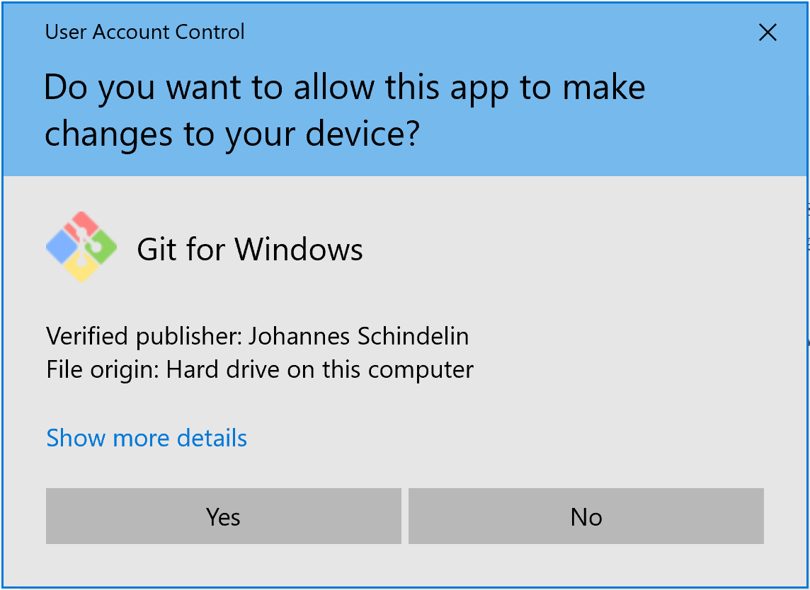

Windows may ask you if you want Git for Windows to be able to make changes to your device. Click yes.
You can click through most of the defaults by clicking “Next,” ⚠️EXCEPT FOR TWO: when you get to the “Choosing the default editor used by Git” step, select Visual Studio Code.
When asked about the “initial branch name in new repositories”, please choose Override the default:
FIXME